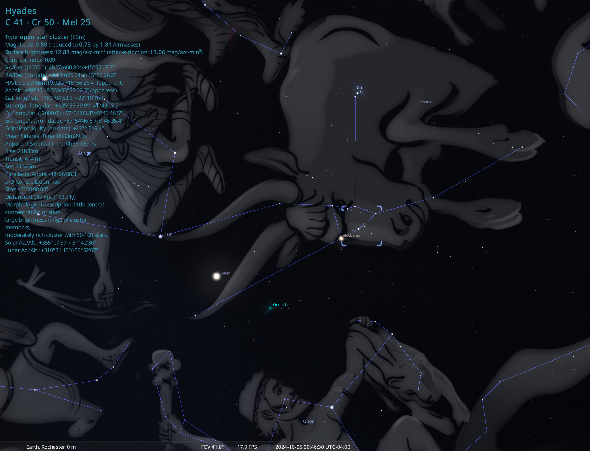

Open clusters are star clusters composed of dozens to perhaps a few thousand stars that formed at roughly the same time from the same giant molecular cloud. Unlike globular clusters, they are loosely bound, and may ultimately experience tidal disruption and become dispersed as they orbit the milky way. Studies imply that for the bulk of open clusters, this dispersion happens within 1 Gyr.
The nearest moderately-rich open cluster to the solar system is known as the Hyades, and sits at around 47 parsecs (~150 ly) away. The Hyades, being as close as it is, can be seen with the naked eye. From our location in Rochester, NY it is visible for much of the winter, making up the head of the bull for the constellarion Taurus. As you may notice in the image below, it is located close to another naked eye open cluster, the Pleiades.
It will not matter much for the following exercise, but in traditional 2-D coordinate frames the Hyades is located at a right-ascension of around 4h27m and a declination of +15°55'.
In this exercise, you will use StarGateVR to identify the Hyades in 3-dimensional space and recover member stars (or at least, what look like member stars), based soley on position.
The first step is uploading an appropriate dataset to your headset. We will later discuss how to create these datasets, but for now you'll use the dataset linked below. The .csv file which should download contains all astrometrically-well behaved Gaia DR3 stars in a radius of 75 parsecs from the sun.
Download DatasetIf you don't remember how to upload the dataset to the headset (or just need a refresher), please revisit the Introduction to StarGateVR page.
Once you've got the data loaded onto the headset, go ahead and open it up in StarGateVR. Take some time to familiarize yourself with what you're seeing in positional (XYZ) space.
As soon as you feel comfortable, try and find the Hyades in XYZ space. It is the only open moderately rich open cluster within that distance, so should appear as the only 3-dimensional overdensity. If you are having trouble locating it, first try using the point brightness and scale sliders to adjust your view. If that fails, you can grab the gate and use the coordinates visible on it to identify roughly the correct position.
Even if you located the Hyades without using the methods listed above, it is still a good idea to double check that you're in the area of the above coordinates using the gating tool.
Once you're satisfied you've located the Hyades, place the gating tool in the approximate center. You can then use the 3 sliders to alter the ellipsoidal shape of the gate to best fit the physical shape of the Hyades open cluster. Make sure you set the gate once you're satisfied you've gotten most of the Hyades members within it.
To make the following analysis easier, it is highly recommended at this point that you "turn off" all stars not in the gate. Please reference the introductory webpage if you are unsure of how to do this.
Now that you've set the gate, you can click the "save gated data" button to create a .csv file with just the stars in your Hyades gate. You can now export this file from the headset to your personal computer.
Now that you have the data in hand, there are a few standard plots that you can make to eek out some more information about your cluster.
The first of these plots is called the Gaia color-magnitude diagram (CMD), a proxy for the well known Hertzsprung-Russel diagram using the Gaia filters.
Noting that a traditional optical CMD uses an absolute magnitude as a proxy for temperature and a color subtraction (i.e. B-V) as a proxy for mass, looking over your exported .csv, what columns should you use as the axes for a Gaia CMD?
Once you've settled on the columns needed, go ahead and make your plot using your prefered code/software (I personally recommend using the pandas library in python to interface with your .csv and using python's matplotlib plotting code).
Because open clusters like the Hyades are composed of stars with roughly the same chemical makeup that all formed at nearly the same time, you should see a clearly defined main sequence in this diagram without much vertical spread. The plot that you make should look something like this.
Does your plot have a clear main-sequence? Are there any stars that aren't sitting nicely along it? Can you come up with a few possible explanations for these sources?z
{kind=link}